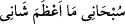

Medine Vâlîsi Abbâsî Câfer b. Süleyman, İmam Mâlik (r.a.)’ı dövdürüp ona
yapacağını yaptı. Mâlik baygın olarak alınıp götürüldü. Daha sonra ayıldığında şöyle
dedi: “Sizi şâhid tutuyorum ki ben, beni döven kişiye hakkımı helâl ediyorum!” Sonra
bunun sebebi sorulunca şöyle cevap verdi: “Ölüp Nebî (s.a.) ile karşılaşmaktan ve onun
âilesinden olan bir kimsenin benim yüzümden cehenneme gitmesinden hayâ ettiğim için
hakkımı bağışladım.”
Halîfe Mansûr Medine’ye gelince Câfer’den kısas yoluyla İmam Mâlik’in hakkını
almak için onu dâvet ettiği zaman da şöyle demiştir: “Allah’a sığınırım! Vallâhi,
Rasûlullah (s.a.)’e yakınlığından ötürü bana vurmuş olduğu tüm kamçıları kendisine
helâl ettim.”
‘Hilm/yumuşak başlılık ahlâkın tuzudur.’ denilmiştir.
Hz. Aişe, bir câriye için ağlayıp duruyordu. Kendisine sebebi sorulunca şöyle dedi:
“Kötü ahlâklı biri olan bu kızın kötü huylarını hoş görme ve beyinsizce hareketlerine
tahammül gösterme gibi daha önceden yapamadığım şeylere üzülüyorum da onun için
ağlıyorum.”
Yukarıdaki (85-86.) âyetlerin işârî yorumu şöyledir: “Biz gökleri, yeri ve ikisinin
arasındakileri ancak hak ile yarattık.” Yâni ancak Hakk’ın sıfatlarını mükâşefe eden
Hak erbâbına hak ile Hakk’ın âyetlerin mazhar olarak yarattık. Çünkü insan dışında
göklerin, yerin ve ikisi arasındakilerin, kendilerinin Hakk’ın âyetlerine mazhar
olduklarına dâir bir şuûrları yoktur. Bu şuûr sâdece insân-ı kâmile âiddir. Nitekim Allah
Teâlâ: “Göklerin ve yerin yaratılışında, gece ile gündüzün birbiri ardınca gelip
gidişinde akl-ı selim sâhipleri için gerçekten açık ibretler vardır.” (Âl-i İmrân,
3/190) buyurmuştur. O akl-ı selim sâhipleri, rabbânî ahlâklarının lübbü, insanlık
sıfatlarının kışrından sıyrılıp hâlis olmuş kimselerdir.
Âyete bir mânâ daha vardır: “Biz gökleri,” yâni ruh göklerini “yeri” yâni beden
yerini “ve ikisinin arasındakileri” nefisleri, kalbleri, sırları ve hafîleri “ancak hak
ile” yâni ancak Hakk’ın mazharı için “yarattık.” O’nun mazharı insandır. Çünkü diğer
varlıklar ve yaratılmışlar arasında O’na mahsûs yegâne varlık odur. Çünkü o, tüm dış
yapısı ve iç mânâları îtibariyle Hak Teâlâ’nın zâtının ve sıfatlarının aynasıdır.
Dolayısıyla kendisini tezkiye ve tasfiye ettiği zaman O’nun mazharıdır. Tahliye (hı ile)
ve tahliye (hâ ile) ettiğinde yâni boşaltıp süslediğinde de bunun şuûrunda olduğu için
yine O’nun mazharıdır. Nitekim benliğinin pasını giderip aynasını cilâlayan ve
rubûbiyyetinin hak ile tecellîsi sırasında O’nun hüviyyetini müşâhede tecellîsine mazhar
olarak “Ene’l-Hak (Ben Hakk’ım!” diyen kimsenin ve kendi benliği O’nun
sübhâniyyetinin bakâsında fânî olduktan sonra: “ Sübhânî mâ a‘zame
şânî (Kendimi tenzih ederim! Şânım ne kadar yücedir)” diyen kimsenin durumu da buna
benzer.
“O sâat (kıyâmet), mutlaka gelecektir.” Bu ifâde, aşk kıyâmetinin sâdık tâliblerin
nefislerine mutlaka geleceğine işârettir. Bu sâdık tâlibler, nefislerine göğüs gerip